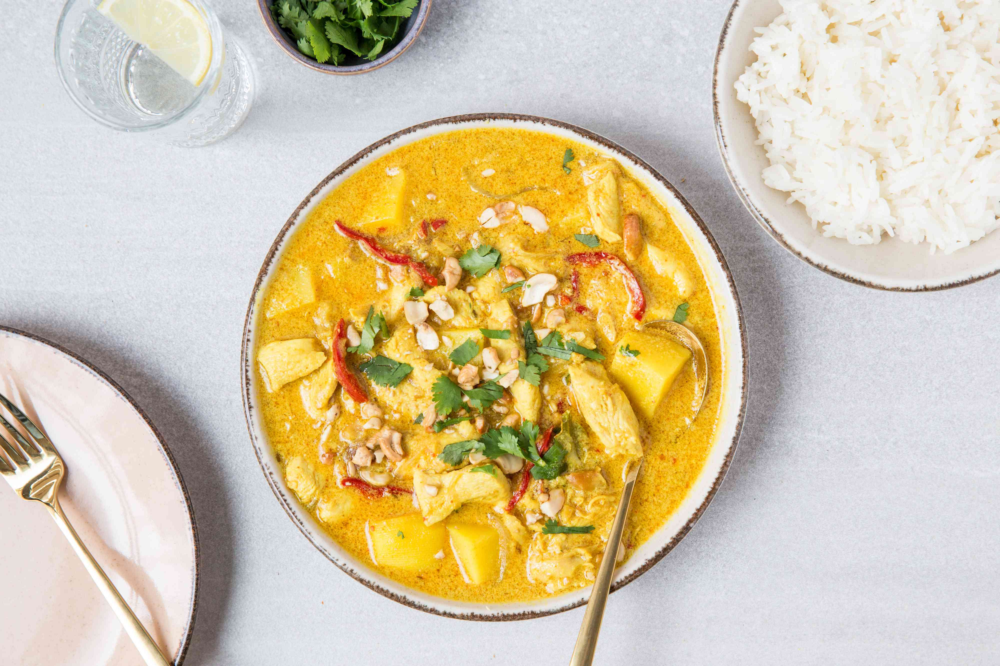

Chicken Massaman Curry
Home

Description
Looking for a quick and tasty midweek dinner option? Try cooking up our
Chicken Massaman Curry in just 20 minutes for a delicious and speedy meal.
Ingredients
- Jasmine Rice
- Diced Chicken Thigh
- Baby Spinach
- Carrot
- Massaman Style Curry Paste
Steps
- Boil rice
- Prep vegetables
- Stir fry chicken
- Add vegetables
- Add and simmer sauce
- Add spinach
- Bring to boil and simmer
- Serve